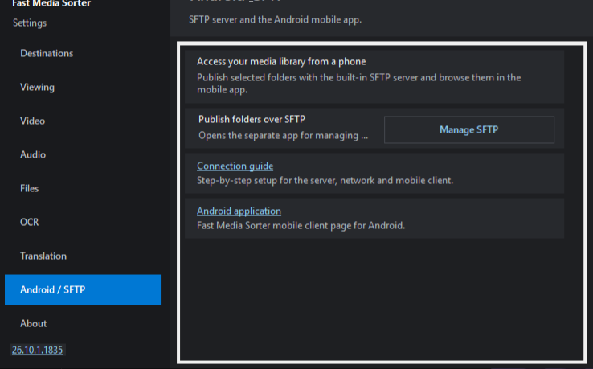

Як публікувати свої папки для Android
Діліться папками цього ПК з застосунком FastMediaSorter на телефоні Android - домашньою мережею або через інтернет. Без хмари й акаунтів: телефон підключається прямо до вашого ПК зашифрованим з'єднанням SFTP. Роздачею опікується окрема програма Share Manager, що йде разом із переглядачем. Вона встановлюється з типом встановлення Повна (у типі Компактна її немає) і працює з 64-бітним переглядачем (FastMediaSorter_LITE.exe) на Windows 10 версії 1607 і новіше; у 32-бітному переглядачі для Windows 7/8.1 її немає.
#Перш ніж почати
- Одне підтвердження адміністратора і одне правило брандмауера. Уперше кнопка Увімкнути функції сервера.. один раз запитує у Windows права адміністратора (вікно UAC) і додає правило брандмауера Windows лише для програми роздачі. Це ж можна ввімкнути галочкою під час встановлення. Поки цього не зроблено, нічого не роздається. Скасувати: Налаштування менеджера.. - Мережа - «Вимкнути функції сервера..».
- Шлях через інтернет. Коли роздача запускається, якщо не позначено Тільки локальна мережа (без доступу з інтернету) (Налаштування менеджера.. - Мережа; типово галочки немає), Share Manager просить роутер відкрити порт (UPnP/NAT-PMP) і перевіряє через зовнішній сервіс check-host.net, чи видно цей порт з інтернету. Позначте її, щоб усе залишалося всередині локальної мережі.
- Що може телефон. Поки роздача ввімкнена, позначені папки можна читати мережею, а за замовчуванням телефон може й додавати, перейменовувати та видаляти в них файли. Щоб папку можна було лише переглядати, виберіть у Редагувати справжню заборону («Недоступно для запису на рівні сервера»).
- QR-код і файл
.fmscfg- це ключ. Вони містять автоматично створений пароль (і PIN, якщо його задано) - не публікуйте їх. У вікні Поділитися - код доступу можна поставити галочку Не включати пароль до файлу/QR і передати пароль окремо; чи прийме телефон код без пароля, залежить від версії Android-застосунку. Надіслати поштою.. попереджає одержувача в листі й не залишає копії файлу на комп'ютері; збережений.fmscfgдоступний лише вашому обліковому запису Windows. - Зупиніть, коли закінчите. Натисніть Зупинити роздачу або вийдіть із Share Manager через трей. З'єднання шифрується, а телефон запам'ятовує ключ вашого ПК під час першого підключення - пізніше попередження "ключ змінився" важливе.
#Покроково
-
У Fast Media Sorter & Sharing for Windows клацніть правою кнопкою по рядку каталогу й виберіть Поділитися цією текою з Android.., або відкрийте Налаштування (F2) → Сервер і ресурси → Android / SFTP і натисніть Керування SFTP. Будь-який зі способів відкриває окрему програму Share Manager.

Налаштування: кнопка Керування SFTP відкриває Share Manager. - Уперше Share Manager повідомляє Функції сервера вимкнено: натисніть Увімкнути функції сервера.. і підтвердьте запит адміністратора (див. «Перш ніж почати»). До того нічого не роздається; сам переглядач лишається звичайною локальною програмою.
- Share Manager відкриється з уже доданою текою, і роздача запуститься - на панелі Доступ з Android буде видно адресу ПК. Додавайте інші теки кнопкою Додати папку.. і позначайте галочками лише ті, що мають бути видимі на телефоні; кнопка Редагувати задає справжню заборону запису, PIN, дозволені типи медіа, теку-приймач для копій тощо.
- Натисніть велику кнопку Поділитися. У вікні Поділитися - код доступу з'являться QR-код і кнопки Показати QR-код, Зберегти файл .fmscfg.., Надіслати поштою.. та Скопіювати логін/пароль. (Якщо ви почали з правого кліку по папці, це вікно відкриється саме.)
-
На телефоні відкрийте FastMediaSorter → Додати ресурс → SFTP/FTP → Імпорт із компаньйона, потім відскануйте QR-код (або відкрийте збережений файл
.fmscfg). - Готово - спільні папки відкриваються на телефоні. Роздача працює далі з трея, навіть коли переглядач закрито; закриття вікна Share Manager просто згортає його в трей, поки триває роздача.
#Локальна мережа чи інтернет
Один QR-код / один файл .fmscfg містить усі способи зв'язатися з ПК: локальну Wi-Fi, IPv6 та адресу з інтернету. Телефон пробує їх усі й підключається тим, що доступний, віддаючи перевагу швидкому локальному. Одне сканування працює і вдома, і поза домом - обирати "мережу" заздалегідь більше не потрібно.
Локальна мережа
Коли телефон у тій самій Wi-Fi, що й ПК, усе працює одразу - налаштовувати нічого. Це варіант за замовчуванням і найприватніший.
Інтернет
Коли роздача запускається, Share Manager пробує відкрити порт автоматично (UPnP/NAT-PMP), а потім перевіряє ззовні, чи він справді відповідає (через check-host.net). Якщо позначено Тільки локальна мережа (без доступу з інтернету), ні те, ні інше не виконується. Рядок Через інтернет чесно показує адресу - або повідомляє, що ви за CGNAT. Якщо порт не відкрито, відкрийте Як налаштувати доступ через інтернет - інструкцію проброса порту під ваш роутер, і Перевірити доступ з інтернету для перевірки. Якщо ПК має IPv6, його адресу додано теж, і вона працює навіть за CGNAT.
Покрокові інструкції проброса портів за моделями: portforward.com (відкриється в новій вкладці).
Знаходить ваш ПК сам
У тій самій Wi-Fi телефон додатково знаходить ПК за відбитком його ключа. Тож навіть якщо локальна адреса ПК змінилася після сканування коду (нова оренда, перепідключення), телефон перепідключиться сам - пересканувати не потрібно.
Підтримка виробників: TP-Link (відкриється в новій вкладці) · ASUS (відкриється в новій вкладці) · Keenetic (відкриється в новій вкладці) · D-Link (відкриється в новій вкладці) · NETGEAR (відкриється в новій вкладці) · Huawei (відкриється в новій вкладці) · Xiaomi (відкриється в новій вкладці) · MikroTik (відкриється в новій вкладці)
#Інші способи з'єднати ваші пристрої
Ця сторінка про один спосіб: ваш ПК роздає теки, а телефон підключається до нього - вдома або через ваш роутер. Портал Обмін медіа між вашими пристроями ставить поруч усі способи: що потрібно кожному, що він робить і яка програма в ньому бере участь.
- Стартова сторінка порталу (відкриється в новій вкладці) - усі способи і що робить кожна програма.
- Домашня мережа (відкриється в новій вкладці) - ваш роутер і жодного сервера посередині, спосіб, який налаштовує ця сторінка.
- Сервери на Windows (відкриється в новій вкладці) - яка програма Windows роздає ваші теки і чим відрізняється серверна редакція, що працює цілодобово.
#Якщо телефон не підключається
- Одна мережа? Локальний шлях працює лише коли телефон у тій самій Wi-Fi, що й ПК.
- Роздача запущена? Кнопка запуску й зупинки має показувати Зупинити роздачу. Знову відкрийте Share Manager і перевірте показану адресу та статус.
- Брандмауер: порт SFTP має бути дозволений у брандмауері Windows. Правило додає Увімкнути функції сервера.. (або галочка в інсталяторі) - див. «Перш ніж почати».
- CGNAT: деякі провайдери ділять одну публічну адресу між багатьма - проброс портів не допоможе. Користуйтеся локальною мережею, адресою IPv6 (якщо вона є з обох боків), VPN/ретранслятором або попросіть публічну "білу" IP.
- IP змінився: домашні адреси змінюються. У тій самій Wi-Fi телефон знаходить ПК сам; з інтернету - відкрийте Share Manager знову, щоб побачити поточну адресу, або налаштуйте Dynamic DNS на роутері.
#Поруч за темою
Доступ цілодобово
Роздача вище працює, поки ви увійшли в систему і Share Manager запущено. Серверна редакція піднімає ту саму роздачу як службу Windows, що стартує із завантаженням і працює без входу в систему - той самий SFTP, та сама прив'язка за QR, той самий застосунок Android. Серверна редакція (завжди доступна).
Диски FileDO
Віртуальний диск FileDO .fdd роздається через той самий Share Manager і ту саму прив'язку за QR або .fmscfg. Спільний доступ до віртуальних дисків FileDO .fdd.
В інший бік
Щоб відкрити сервер, NAS або спільну теку іншого ПК у самому переглядачі, див. Відкрийте сервер або мережеву теку як звичайну теку.